Material Specification: Triple-silver, Low-E laminated safety glass enclosing the entire perimeter.
Performance Application: Achieves a Solar Heat Gain Coefficient (SHGC) ≤ 0.15 and a U-Value ≤ 1.0 W/m²K while maintaining a Visible Light Transmittance (VLT) ≥ 60%. Provides 360-degree panoramic park visibility while completely blocking extreme external summer heat.
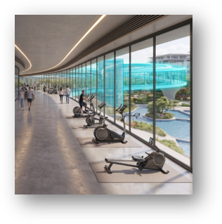
Material Specification: High-efficiency monocrystalline silicon Building-Integrated Photovoltaic (BIPV) arrays. The modules feature a 20% base efficiency rating and are treated with an advanced hydrophobic nano-coating for self-cleaning capabilities, engineered to sustain an optimal 0.80 performance ratio against thermal and soiling losses.
Performance Application: covering a 1,750 m² active area, Utilizing Dubai's 5.5 kWh daily average irradiance, the system generates a calculated daily energy yield of 1,540 kWh. The self-cleaning surface actively repels sand and dust accumulation to maintain this peak generation with minimal manual maintenance.
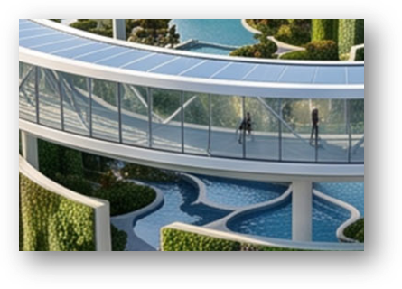
Steel Structure:
Material Specification: High-yield carbon steel (Grade S355JR) treated with a C5-M marine-grade anti-corrosion epoxy and intumescent fire-resistive coating.
Performance Application: Facilitates expansive, column-free interior floor plates to maximize spatial flexibility. It provides high-tensile, lightweight support for the heavy BIPV roof canopy.
Concrete Columns:
Material Specification: High-performance, reinforced architectural fair-faced concrete.
Performance Application: Elevates the structural loop above the ground plane. Cast with curved, aerodynamic profiles to seamlessly distribute vertical loads while optimizing natural wind flow and pedestrian circulation at the ground level.
Column Connections & Structural Ties:
Material Specification: Pre-tensioned steel tie rods and reinforced concrete ring beams integrated into the floor slab.
Performance Application: Ensures lateral stability, torsion resistance, and structural continuity across the massive figure-eight geometry. Mitigates dynamic loads, vibrations from indoor jogging, and thermal expansion.
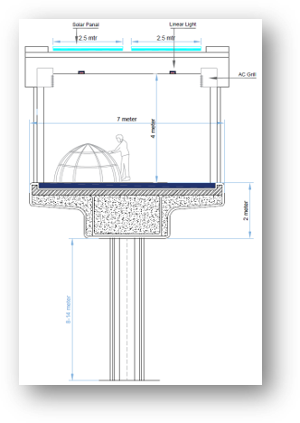
Interior Flooring:
Material Specification: Poured architectural resin combined with polished micro-concrete.
Performance Application: Delivers a high-durability, low-VOC, seamless surface with an R10 slip-resistance rating. Perfectly optimized for heavy daily footfall, continuous indoor athletic training, and step-free universal accessibility.
Interior Ceiling:
Material Specification: Perforated acoustic gypsum panels paired with sustainable composite timber baffles.
Performance Application: Elegantly conceals overhead mechanical, electrical, and plumbing (MEP) infrastructure. The acoustic perforations absorb internal noise and reverberation, ensuring a calm, quiet environment even during peak occupancy.
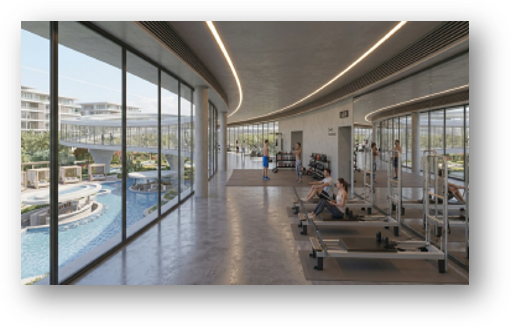
Lighting Systems:
Material Specification: Low-glare, tuneable/ 4000K LED linear profiles continuously integrated into the architectural ceiling layout.
Performance Application: Operates on a highly efficient demand profile capped at 96.25" kWh/day". Utilizes daylight harvesting sensors to automatically dim or brighten based on the natural light penetrating the glass walls, eliminating energy waste.
HVAC:
Material Specification: Demand-controlled Variable Refrigerant Flow (VRF) paired with smart Air Handling Units (AHU).
Performance Application: Consumes a strictly managed 1,365" kWh/day". Strategically zoned to deliver precision cooling to high-activity fitness areas and relaxed remote-work lounges. Integrated CO2 sensors dynamically adjust fresh air intake based on real-time crowd density.
IoT Network:
Material Specification: Networked indoor air quality (IAQ) monitors and thermal occupancy sensors.
Performance Application: Acts as the brain of the loop. Continuously reads indoor temperature, humidity, and foot traffic to autonomously adjust the HVAC and lighting systems, ensuring maximum comfort with zero manual intervention.
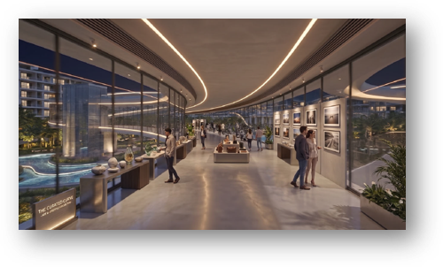
Material Specification: Resin-bound porous aggregate and high-albedo architectural concrete, integrated with high-contrast tactile paving indicators.
Performance Application: Achieves a Solar Reflectance Index (SRI) ≥ 78, actively reflecting solar radiation to lower surface temperatures. The tactile warning and directional tiles ensure ADA-compliant, step-free navigation for seniors and people of determination.
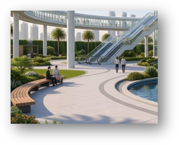
Material Specification: Drought-tolerant, saline-resistant turf grasses planted over engineered sandy-loam soil with subsurface moisture retention layers.
Performance Application: Provides expansive, durable green spaces for community festivals and family picnics. Reduces ambient heat through evapotranspiration while maintaining a strict low peak irrigation demand (≤ 2.5 L/m²/day).
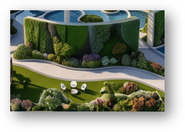
Material Specification: UV-resistant, marine-grade composite timber framing featuring slatted louvered roofing and integrated seating.
Performance Application: Class A fire-rated with ultra-low moisture absorption. Positioned alongside water bodies, these structures provide deep passive shading and thermal relief for families while maintaining visual connectivity to adjacent play zones.
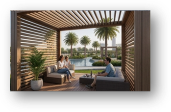
Material Specification: Anti-slip, light-coloured mosaic glass tiling. Supported by a closed-loop continuous circulation pump, industrial-grade UV sterilization, and automated pH/chlorine dosing systems.
Performance Application: Covers 30% of the ground plane to act as a massive thermal sink. Evaporative cooling actively lowers adjacent ambient air temperatures. The UV purification ensures pristine, safe water quality with minimal manual maintenance.
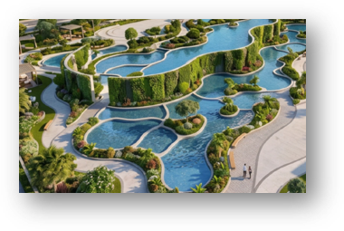
Material Specification: Native halophytic flora and broad-canopy shade trees, specifically utilizing the Prosopis cineraria (Ghaf) and Azadirachta indica (Neem).
Performance Application: Creates a natural acoustic and visual buffer around the park's perimeter. Provides continuous organic shading over pedestrian pathways and requires minimal irrigation.
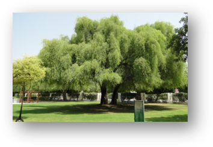
Material Specification: Thermally modified ash wood mounted on precast architectural concrete bases.
Performance Application: Placed at strategic intervals along all pathways. The thermal modification prevents heat retention, ensuring the seats remain cool and comfortable to the touch even under direct sunlight.
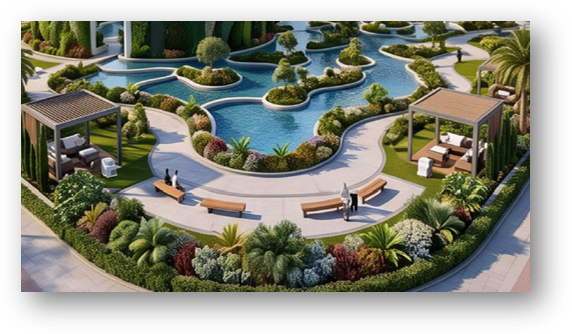
Material Specification: Impact-absorbing, dual-layer EPDM (Ethylene Propylene Diene Monomer) rubberized surfacing.
Performance Application: Delivers high kinetic energy return and shock absorption to protect runners' joints. The material is highly weather-resistant, maintaining structural and thermal stability against extreme summer temperatures.
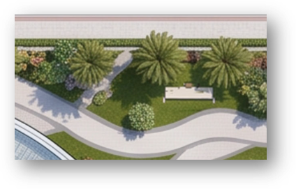
Material Specification: IP65-rated, marine-grade aluminium LED bollards and low-glare concealed uplighting for specimen trees.
Performance Application: Operates on a highly efficient, dark-sky compliant lighting layout to prevent light pollution. Powered by the central BIPV grid and controlled via astronomic timers and motion sensors to ensure safe, continuous illumination for evening joggers and families.
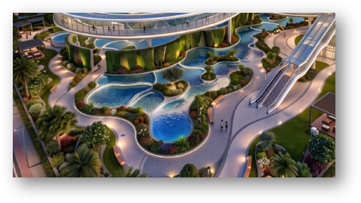